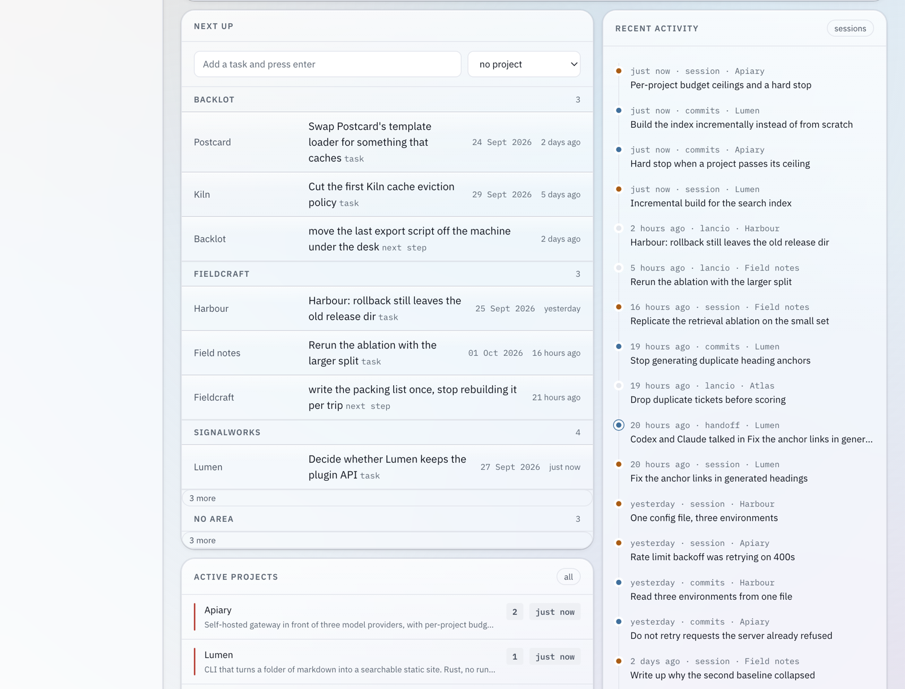
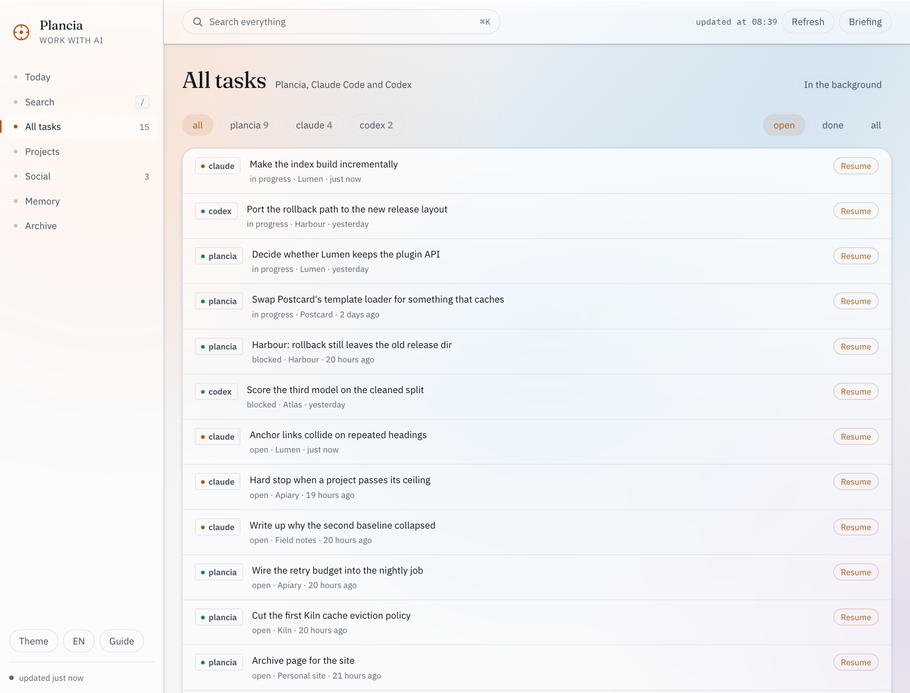
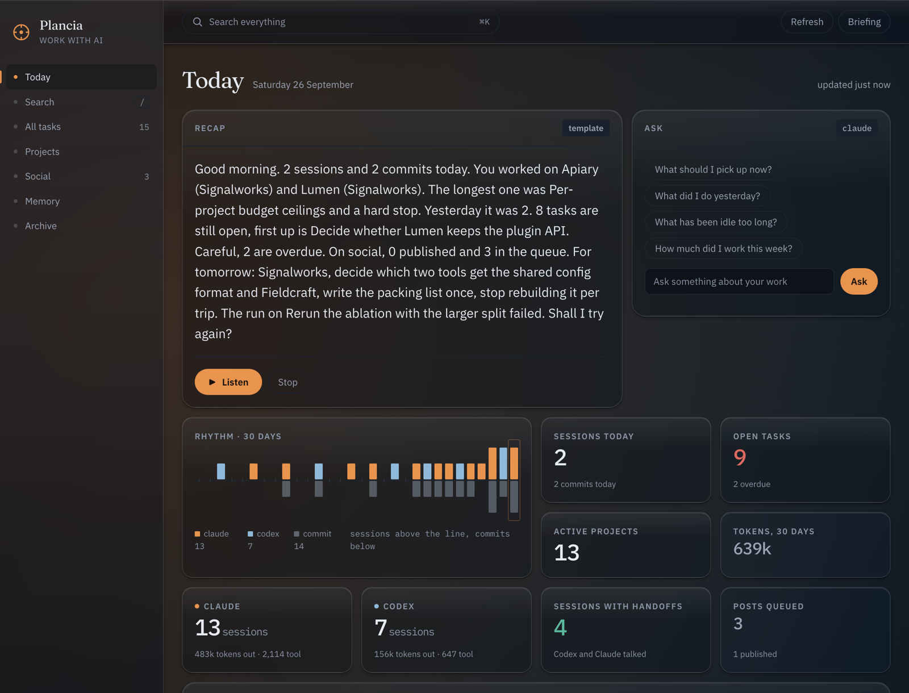
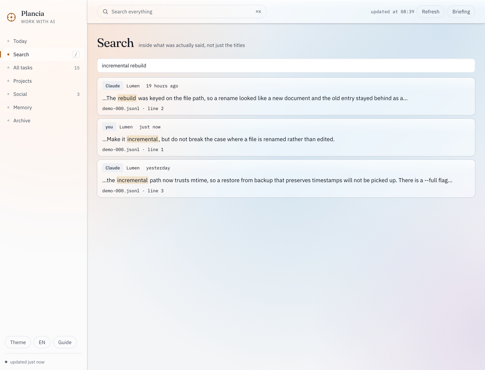

Two agents, four terminals,
one row each.
Due agenti, quattro terminali,
una riga ciascuno.
Claude Code and Codex already write down everything they do, transcripts and task lists and goals and memory, in files on your disk. Nothing reads them together. Plancia does, and it ends with a decision.
Claude Code e Codex si scrivono già tutto, transcript e liste di task e obiettivi e memoria, in file sul tuo disco. Solo che non li legge nessuno insieme. Plancia sì, e finisce con una decisione.
- One row per project tells you what to do.
- Una riga per progetto ti dice cosa fare.
- Resume reopens the conversation that wrote the task.
- Riprendi riapre la conversazione che ha scritto il task.
- The rest stays folded, one click away.
- Il resto sta ripiegato, a un clic di distanza.
Python 3 and macOS 13+. No dependencies to install, no account, no server.
The whole archive is one file: ~/.plancia/plancia.db.
Python 3 e macOS 13+. Nessuna dipendenza da installare, nessun account,
nessun server. L'archivio è un file solo: ~/.plancia/plancia.db.
On macOS 26 and later the native app is glass throughout, and every view shows its last state at once while it refreshes: never a blank screen. Su macOS 26 e successivi l'app nativa è di vetro su ogni superficie, e ogni vista mostra subito l'ultimo stato mentre si aggiorna: mai una schermata vuota.
bytes of telemetry, ever
byte di telemetria, mai
agents read: Claude Code and Codex
agenti letti: Claude Code e Codex
file holds everything, in plain SQLite
file tiene tutto, in SQLite leggibile
tools your agents can call back into it
strumenti con cui gli agenti ci rientrano

The work is there. It is just scattered.
Il lavoro c'è. È solo sparpagliato.
Claude Code keeps its task list in one folder. Codex keeps its goals in a different database. Your own notes are somewhere else again. None of the three knows the other two exist, so at any moment you are the only integration layer, and the only one who remembers what was left half done on Thursday.
Claude Code tiene la sua lista di task in una cartella. Codex tiene i suoi obiettivi in un altro database. I tuoi appunti stanno da un'altra parte ancora. Nessuno dei tre sa degli altri due, quindi l'unico punto di integrazione sei tu, e sei anche l'unico che si ricorda cosa era rimasto a metà giovedì.
One row per project, not a pile of tasks
Una riga per progetto, non un mucchio di task
- 01Grouped by area
A thesis, a real repo with its worktrees, a client: whatever you told Plancia is the parent, projects sit under it instead of in one flat list.
- 01Raggruppate per area
Una tesi, un repo vero con i suoi worktree, un cliente: quello che hai detto a Plancia è il padre, e i progetti stanno sotto invece che in una lista piatta.
- 02The one thing that needs you
The first open task, or the next step a project declared for itself when nothing is open, sorted by deadline and then by last activity.
- 02La cosa che ti serve davvero
Il primo task aperto, o il prossimo passo che un progetto si è dato quando non ne ha nessuno aperto, ordinati per scadenza e poi per ultima attività.
- 03Seven rows, then "more"
Each area shows up to seven projects; the rest sit behind one click, so a busy area does not push the others off the screen.
- 03Sette righe, poi "altri"
Ogni area mostra fino a sette progetti; il resto sta a un clic di distanza, così un'area piena non spinge fuori schermo le altre.
Resume reopens the conversation that wrote it
Riprendi riapre la conversazione che l'ha scritta
- 01Three sources, one list
Claude Code's task lists, Codex's goals, and Plancia's own tasks, normalised to the same five states and sorted by what actually needs you.
- 01Tre fonti, una lista
Le liste di Claude Code, gli obiettivi di Codex e i task di Plancia, riportati agli stessi cinque stati e ordinati per quello che ti serve davvero.
- 02Alive, closed, or lost
Alive, and Resume copies to the clipboard the message to paste into the conversation that is already running. Closed, and it opens a Terminal on its own, right there. Lost, and it says so, and starts over.
- 02Viva, chiusa o persa
Viva, e Riprendi copia negli appunti il messaggio da incollare nella conversazione già aperta. Chiusa, e apre da sola un Terminale, lì per lì. Persa, e lo dice, e riparte da zero.
- 03In the background, only if you choose it
Send a task off unattended instead: the switch that lets the agent write files is off by default and turns amber only when you flip it, every time.
- 03In background, solo se lo scegli
Manda un task in background invece di riprenderlo: l'interruttore che lascia scrivere i file all'agente è spento di default e diventa ambra solo quando lo accendi, ogni volta.

A recap that ends with a decision
Un riepilogo che finisce con una decisione
- 01Told, not listed
Your day in a paragraph, in your language, out loud if you want. Italian, English, Spanish, French, German, Portuguese.
- 01Raccontato, non elencato
La giornata in un paragrafo, nella tua lingua, a voce se vuoi. Italiano, inglese, spagnolo, francese, tedesco, portoghese.
- 02Proposals come from signals, never from a hunch
A failed run, a Codex goal out of quota, seven files uncommitted since yesterday, an approved post that never went out. No signal, no proposal.
- 02Le proposte nascono dai segnali, mai da un'intuizione
Un lancio fallito, un obiettivo di Codex senza quota, sette file non committati da ieri, un post approvato e mai uscito. Se il segnale non c'è, la proposta non c'è.
- 03Say "do it"
⌥Space from any app opens the voice panel. It listens continuously and works out from the silence when you are done. Questions about your own data answer in a tenth of a second, with no model involved.
- 03Dì "fallo"
⌥Spazio da qualsiasi app apre il pannello vocale. Ascolta di continuo e capisce dal silenzio quando hai finito. Le domande sui tuoi dati rispondono in un decimo di secondo, senza chiamare nessun modello.

Find what was actually said
Ritrovare quello che è stato detto davvero
- 01Inside the turns, not the titles
A full text index over the prose of every turn, yours and the agent's, from Claude Code and Codex. A session title tells you nothing six weeks later.
- 01Dentro i turni, non nei titoli
Un indice sul testo di ogni turno, tuoi e dell'agente, di Claude Code e di Codex. Il titolo di una sessione non dice niente sei settimane dopo.
- 02Verbatim, with the line it came from
Every hit comes back as it was written, with the file and the line number, so you reopen the moment instead of reading a summary of it.
- 02Com'era scritto, con la riga da cui viene
Ogni risultato torna verbatim, con il file e il numero di riga, così riapri il momento invece di leggerne un riassunto.
- 03Three ways in
/from any view,plancia cercain the terminal, andplancia_searchinside Claude Code and Codex. - 03Tre strade
/da qualsiasi vista,plancia cercada terminale, eplancia_searchdentro Claude Code e Codex.

Everything it knows, and where it read it
Tutto quello che sa, e dove l'ha letto
Plancia has no server, no account and no telemetry. It reads files you already have and writes one SQLite database you can open with any tool. This is the whole list, and since the source is public you can check it rather than believe it.
Plancia non ha un server, non ha un account e non manda telemetria. Legge file che hai già e scrive un database SQLite che puoi aprire con qualsiasi strumento. Questa è la lista intera, e siccome il sorgente è pubblico puoi controllarla invece di crederci.
| reads | what it takes | writes |
|---|---|---|
| legge | cosa ne prende | scrive |
| ~/.claude/projects/ | session titles, counts, tokens, tools used | never |
| ~/.claude/projects/ | titoli delle sessioni, conteggi, token, strumenti usati | mai |
| ~/.claude/tasks/ | open task lists | never |
| ~/.claude/tasks/ | le liste di task aperte | mai |
| ~/.codex/sessions/ | Codex sessions and goals, the same way | never |
| ~/.codex/sessions/ | sessioni e obiettivi di Codex, allo stesso modo | mai |
| your git repos | commit subjects, branch, how many files are dirty | never |
| i tuoi repo git | oggetto dei commit, ramo, quanti file sono da committare | mai |
| ~/.plancia/plancia.db | the archive it builds from all of the above | yes, only here |
| ~/.plancia/plancia.db | l'archivio che costruisce con tutto il resto | sì, solo qui |
| ~/.plancia/eventi.jsonl | an append-only log other tools can subscribe to | yes, only here |
| ~/.plancia/eventi.jsonl | un registro in append a cui altri strumenti si possono agganciare | sì, solo qui |
The one thing that does leave: when you ask for a written recap or send work to an
agent, that runs your own claude or codex command line, with your
own subscription. Plancia never holds an API key.
L'unica cosa che esce: quando chiedi un riepilogo scritto o mandi un lavoro a un
agente, gira la tua riga di comando claude o codex, con il tuo
abbonamento. Plancia non tiene nessuna chiave API.
Free if you build it. Pay if you want it built.
Gratis se te lo compili. A pagamento se lo vuoi già pronto.
The source is the whole program, under the GPL, forever. What costs money is the part that costs me: a signed and notarised build that opens with a double click, and the work of keeping it alive.
Il sorgente è tutto il programma, sotto GPL, per sempre. Quello che costa è la parte che costa a me: una build firmata e notarizzata che si apre con un doppio clic, e il lavoro di tenerla viva.
From source
Dal sorgente
Two commands. Same program, no asterisks.
Due comandi. Lo stesso programma, senza asterischi.
- Every feature, no time limit
- Tutte le funzioni, senza scadenza
- You compile the Mac app yourself with
mac/build.sh - L'app Mac te la compili con
mac/build.sh - macOS asks you to allow it once, in System Settings
- macOS te la fa autorizzare una volta, da Impostazioni di Sistema
Signed build
Build firmata
One payment. No subscription, no account, no licence server.
Un pagamento solo. Nessun abbonamento, nessun account, nessun server di licenze.
- Opens with a double click, signed and notarised by Apple
- Si apre con un doppio clic, firmata e notarizzata da Apple
- No licence key, no activation: the GPL forbids both
- Nessuna chiave, nessuna attivazione: la GPL le vieta
- Updates in place, for this major version
- Si aggiorna da sola, per questa versione maggiore
- It pays for the certificate, and for the next feature
- Paga il certificato, e la prossima funzione
The obvious ones
Quelle ovvie
If it is open source, why would I pay?Se è open source, perché dovrei pagare?
You would not, if you are happy compiling it. That path stays complete and free, and this is not a crippled build: the paid one is the same code. What you buy is the signing certificate Apple charges me for every year, the notarisation, and the fact that someone keeps fixing it. Ardour and Krita have worked this way for years.
Non pagheresti, se sei contento di compilartelo. Quella strada resta completa e gratis, e non è una versione mutilata: quella a pagamento è lo stesso codice. Quello che compri è il certificato di firma che Apple mi fa pagare ogni anno, la notarizzazione, e il fatto che qualcuno continui a sistemarlo. Ardour e Krita funzionano così da anni.
Does anything I write ever leave my machine?Esce mai qualcosa che scrivo dalla mia macchina?
Not through Plancia. It has no network client of its own beyond an optional GitHub
call for your public repo list, which you can leave off. When you ask for a written recap
it runs the claude command you already have, so that text goes wherever your
own subscription already sends it, and nowhere else.
Non attraverso Plancia. Non ha un client di rete suo, a parte una chiamata a GitHub
per l'elenco dei tuoi repo pubblici, che puoi lasciare spenta. Quando chiedi un riepilogo
scritto gira il comando claude che hai già, quindi quel testo va dove lo manda
già il tuo abbonamento, e da nessun'altra parte.
Can it change my files on its own?Può cambiare i miei file da solo?
Only if you turn on "can modify the project files" for that dispatch, that time: it is off by default and turns amber only once you flip it, never on its own. Everything else, the voice and the recap and the proposals, reads and reports.
Solo se accendi tu l'interruttore "può modificare i file del progetto" per quel lancio, quella volta: è spento di default e diventa ambra solo quando lo accendi, mai da solo. Tutto il resto, la voce e il riepilogo e le proposte, legge e riferisce.
Do I need Claude Code and Codex both?Mi servono sia Claude Code sia Codex?
No. Each source is optional: with only one installed you get one column instead of two, and everything else works the same.
No. Ogni fonte è opzionale: con uno solo installato hai una colonna invece di due, e tutto il resto funziona uguale.
Windows? Linux?Windows? Linux?
The server, the dashboard and the recap are plain Python and already run anywhere Python runs, browser included. Only the native app, the menu bar and the voice panel are macOS.
Il server, la dashboard e il riepilogo sono Python puro e girano già ovunque giri Python, browser compreso. Sono macOS solo l'app nativa, la barra dei menu e il pannello vocale.
How do other tools plug into it?Come ci si aggancia da altri strumenti?
Two ways. Seven MCP tools, so Claude Code and Codex can read and write the archive
from inside a session; and an append-only event log at ~/.plancia/eventi.jsonl,
one JSON line per event, so anything else can follow along by keeping a bookmark.
In due modi. Sette strumenti MCP, così Claude Code e Codex leggono e scrivono
l'archivio da dentro una sessione; e un registro in append in
~/.plancia/eventi.jsonl, una riga JSON per evento, così qualsiasi altra cosa
può seguirlo tenendo un segnalibro.